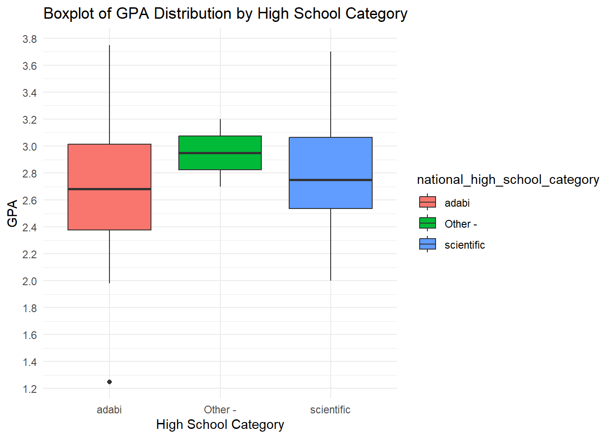
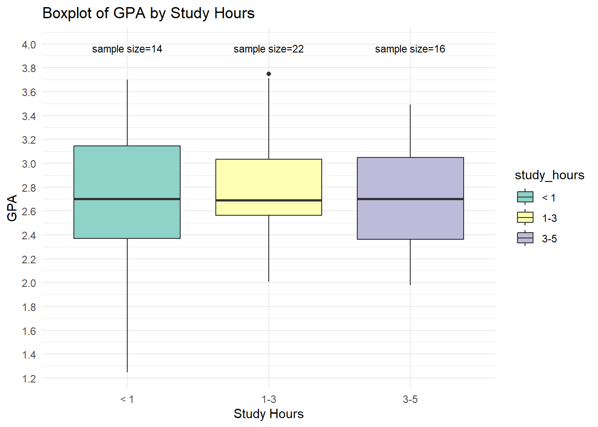

Use: To test if the mean of a single sample is significantly different from a known or hypothesized population mean.
Example: Test if the mean age of BI students = 21
Null Hypothesis: Mean age of BI students = 21
Alternative Hypothesis: Mean age of BI students ≠ 21
# Check the data to ensure there are no missing values and age is numericsummary(survey_data$age)
Min. 1st Qu. Median Mean 3rd Qu. Max.
18.00 20.00 21.00 21.56 22.00 27.00
# Perform one-sample t-testt_test_result <-t.test(survey_data$age, mu =21)# Print the t-test resultprint(t_test_result)
One Sample t-test
data: survey_data$age
t = 2.2194, df = 53, p-value = 0.03076
alternative hypothesis: true mean is not equal to 21
95 percent confidence interval:
21.05348 22.05763
sample estimates:
mean of x
21.55556
Results:
P-Value: 0.08156
Mean Age: 21.55556
A p-value less than the significance level (commonly 0.05) leads to rejecting the null hypothesis.
In this case, the p-value is 0.08156, which is greater than 0.05, indicating that we do not reject the null hypothesis. This suggests that the mean age of the students is not significantly different from 22.
Visualize the mean students age
ggplot(survey_data, aes(y = age)) +geom_boxplot(fill ="skyblue", color ="black") +labs(title ="Boxplot of Age Distribution", y ="Age") +scale_y_continuous(breaks =seq(floor(min(survey_data$age, na.rm =TRUE)), ceiling(max(survey_data$age, na.rm =TRUE)), by =0.5)) +theme_minimal()
2. Two-sample T-test (Independent)
Use: To compare the means of two independent samples to see if they are significantly different.
Example 1: Compare the GPA of BI students by Gender
Null Hypothesis: There is no difference between the mean GPA for male and female BI students
Alternative Hypothesis: There is a difference between the mean GPA for male and female BI students
# Perform a two-sample t-test for GPA between genderst_test_gpa_gender <-t.test(gpa ~ gender, data = survey_data)# Print the resultprint(t_test_gpa_gender)
Welch Two Sample t-test
data: gpa by gender
t = -0.17232, df = 52, p-value = 0.8639
alternative hypothesis: true difference in means between group Female and group Male is not equal to 0
95 percent confidence interval:
-0.2968477 0.2498960
sample estimates:
mean in group Female mean in group Male
2.731724 2.755200
Interpretation:
P-Value: 0.8639
Mean GPA in Group Female: 2.731724
Mean GPA in Group Male: 2.755200
In this case, the p-value is 0.8639, which is much greater than 0.05, indicating that we do not reject the null hypothesis. This suggests that there is no significant difference in GPA between female and male students.
Visualize GPA by Gender:
To create a boxplot showing the GPA distribution by gender, use the following R code:
library(ggplot2)# Create a boxplot for GPA distribution by genderggplot(survey_data, aes(x = gender, y = gpa, fill = gender)) +geom_boxplot() +labs(title ="Boxplot of GPA Distribution by Gender", x ="Gender", y ="GPA") +scale_y_continuous(breaks =seq(floor(min(survey_data$gpa, na.rm =TRUE)), ceiling(max(survey_data$gpa, na.rm =TRUE)), by =0.2)) +theme_minimal()
Example 2: Test if having a job has influence on Student’s GPA
# Perform a two-sample t-test for GPA between work statust_test_gpa_work <-t.test(gpa ~ does_work, data = survey_data)# Print the resultprint(t_test_gpa_work)
Welch Two Sample t-test
data: gpa by does_work
t = 0.10266, df = 46.32, p-value = 0.9187
alternative hypothesis: true difference in means between group No and group Yes is not equal to 0
95 percent confidence interval:
-0.2671799 0.2959036
sample estimates:
mean in group No mean in group Yes
2.748710 2.734348
Interpretation:
P-Value: 0.9187
Mean GPA in Group No: 2.748710
Mean GPA in Group Yes: 2.734348
In this case, the p-value is 0.9187, which is much greater than 0.05, indicating that we do not reject the null hypothesis. This suggests that there is no significant difference in GPA between students who do work and those who do not.
Visualize GPA by Work Status:
To create a boxplot showing the GPA distribution by work status, use the following R code:
library(ggplot2)# Create a boxplot for GPA distribution by work statusggplot(survey_data, aes(x = does_work, y = gpa, fill = does_work)) +geom_boxplot() +labs(title ="Boxplot of GPA Distribution by Work Status", x ="Work Status", y ="GPA") +scale_y_continuous(breaks =seq(floor(min(survey_data$gpa, na.rm =TRUE)), ceiling(max(survey_data$gpa, na.rm =TRUE)), by =0.2)) +theme_minimal()
Example 3: Compare the GPA of Adabi Tawjihi Branch and Scientifc Tawjihi Branch
# Filter the data for the two branchesfiltered_data <- survey_data %>%filter(national_high_school_category %in%c("adabi", "scientific"))# Perform a two-sample t-test for GPA between Adabi branch and Scientific brancht_test_result <-t.test(gpa ~ national_high_school_category, data = filtered_data)# Print the resultprint(t_test_result)
Welch Two Sample t-test
data: gpa by national_high_school_category
t = -0.8071, df = 34.662, p-value = 0.4251
alternative hypothesis: true difference in means between group adabi and group scientific is not equal to 0
95 percent confidence interval:
-0.4019184 0.1733073
sample estimates:
mean in group adabi mean in group scientific
2.699444 2.813750
Interpretation:
P-Value: 0.4251
Mean GPA in Group Adabi: 2.699444
Mean GPA in Group Scientific: 2.813750
In this case, the p-value is 0.4251, which is greater than 0.05, indicating that we do not reject the null hypothesis. This suggests that there is no significant difference in GPA between students from the Adabi and Scientific high school categories.
Visualize GPA by High School Category:
library(ggplot2)# Create a boxplot for GPA distribution by high school categoryggplot(survey_data, aes(x = national_high_school_category, y = gpa, fill = national_high_school_category)) +geom_boxplot() +labs(title ="Boxplot of GPA Distribution by High School Category", x ="High School Category", y ="GPA") +scale_y_continuous(breaks =seq(floor(min(survey_data$gpa, na.rm =TRUE)), ceiling(max(survey_data$gpa, na.rm =TRUE)), by =0.2)) +theme_minimal()

3. Paired Sample T-test
Use: To compare the means of two related samples (e.g., before and after measurements on the same subjects).
Example:- Suppose we want to test if a training program has significantly improved employee productivity scores by comparing their productivity before and after the training.
Code:
# Set seed for reproducibilityset.seed(123)# Generate productivity scores before and after the trainingproductivity_before <-rnorm(30, mean =5, sd =2) # Productivity scores before trainingproductivity_after <- productivity_before +rnorm(30, mean =0.5, sd =1) # Productivity scores after training# Perform paired sample t-test to compare the mean productivity scores before and after trainingt_test_result <-t.test(productivity_before, productivity_after, paired =TRUE)# Print the t-test resultprint(t_test_result)
Paired t-test
data: productivity_before and productivity_after
t = -4.4489, df = 29, p-value = 0.0001169
alternative hypothesis: true mean difference is not equal to 0
95 percent confidence interval:
-0.9901802 -0.3664964
sample estimates:
mean difference
-0.6783383
Interpretation:
Productivity Scores:
Before Training: Generated productivity scores with a mean of approximately 5.
After Training: Generated productivity scores that are on average higher than before training.
p-value: Probability of observing the data if the null hypothesis is true (0.0001169)
Conclusion: Since the p-value (0.0001169) is less than the common significance level (0.05), we reject the null hypothesis. This indicates that there is a significant difference in productivity scores before and after the training, with productivity increasing after the training program.
4. One-way ANOVA
Use: To compare the means of three or more groups to see if at least one mean is different.
Example 1:-Test if there is a difference in student GPA according to study hours
To perform an ANOVA test to compare the effect of study hours on GPA, we first need to ensure that the study hours are categorized (e.g., “less than 1 hour,” “1-3 hours,” etc.) into factors. Then, wecan use the aov function to perform the ANOVA test in R.
R Code for ANOVA Test Comparing Study Hours with GPA
# Convert the columns to ordered factorssurvey_data <- survey_data %>%mutate(study_hours =factor(study_hours, levels =c("< 1", "1-3", "3-5", "> 5"), ordered =TRUE))survey_data <- survey_data %>%filter(study_hours !="> 5")View(survey_data)# Perform ANOVA testanova_result <-aov(gpa ~ study_hours, data = survey_data)# Print the summary of the ANOVA testprint(summary(anova_result))
Df Sum Sq Mean Sq F value Pr(>F)
study_hours 2 0.099 0.04936 0.185 0.832
Residuals 49 13.072 0.26677
Explanation:
Based on the ANOVA results, there is no significant effect of study hours on GPA.
The p-value of 0.943 indicates that the differences in mean GPA among the study hours groups are not statistically significant.
This suggests that, in this dataset, the amount of time spent studying does not have a meaningful impact on GPA.
Possible Reasons for No Significant Effect:
Sample Size:
The sample sizes, especially for the “More than 5 Hours” category, are small. Small sample sizes can lead to less reliable statistical results.
Other Influencing Factors:
GPA may be influenced by many other factors beyond just study hours, such as the effectiveness of study methods, prior knowledge, teaching quality, etc.
Homogeneity of Study Habits:
There might be homogeneity in the study habits of students in this dataset, meaning most students have similar study patterns, leading to similar GPAs.
Measurement of Study Hours:
The accuracy of self-reported study hours can be variable. Students may not accurately report their study hours, leading to less precise groupings.
Visualize GPA by Study Hours
# Load necessary library for visualizationlibrary(ggplot2)# Calculate the sample size for each categorysample_sizes <- survey_data %>%group_by(study_hours) %>%summarise(count =n())# Create boxplot to visualize the relationship between study hours and GPAggplot(survey_data, aes(x = study_hours, y = gpa, fill=study_hours)) +geom_boxplot() +ggtitle("Boxplot of GPA by Study Hours") +xlab("Study Hours") +ylab("GPA") +scale_y_continuous(breaks =seq(1, 4, by =0.2)) +scale_fill_brewer(palette ="Set3") +theme_minimal() +geom_text(data = sample_sizes, aes(x = study_hours, y =4, label =paste0("sample size=", count)), position =position_dodge(width =0.75), vjust =1, size =3)

sample_sizes <- survey_data %>% group_by(study_hours) %>% summarise(count = n()) calculates the sample size for each study_hours category.
geom_text() adds the sample size labels to the plot. The labels are positioned just above the top of the plot (y = 4) and are adjusted to avoid overlap using position_dodge and vjust.
Example 2:- Test if there is a difference in student GPA according to the high school certificate category (National, SAT/ACT, IG, IB)
# Convert high_school_category to a factor if it is not alreadysurvey_data$high_school_category <-as.factor(survey_data$high_school_category)# Perform ANOVA to test the relationship between high school category and GPAanova_result <-aov(gpa ~ high_school_category, data = survey_data)# Print the summary of the ANOVA testsummary(anova_result)
Df Sum Sq Mean Sq F value Pr(>F)
high_school_category 3 0.282 0.09396 0.35 0.789
Residuals 48 12.888 0.26851
Interpretation of ANOVA Results
The ANOVA table helps determine if there is a significant relationship between the high_school_category and GPA. Here are the results:
Explanation:
p-value (Pr(>F)):
Since the p-value (0.778) is much greater than the common significance level of 0.05, we fail to reject the null hypothesis.
This suggests that there is no statistically significant difference in GPA between the different high school categories.
In other words, the high school category does not appear to have a significant impact on GPA in this dataset.
Visualization:
To complement the statistical results, you can create a box plot to visualize the GPA distribution across different high school categories:
# Calculate the sample size for each categorysample_sizes <- survey_data %>%group_by(high_school_category) %>%summarise(count =n())# Create a box plot to visualize the relationship between high school category and GPAggplot(survey_data, aes(x = high_school_category, y = gpa, fill = high_school_category)) +geom_boxplot() +ggtitle("GPA Distribution by High School Category") +xlab("High School Category") +ylab("GPA") +scale_y_continuous(breaks =seq(1, 4, by =0.2)) +scale_fill_brewer(palette ="Set2") +theme_minimal() +geom_text(data = sample_sizes, aes(x = high_school_category, y =4, label =paste0("sample size=", count)), position =position_dodge(width =0.75), vjust =1, size =3)
The ANOVA test evaluates whether there are statistically significant differences between the means of three or more independent groups.
Here are a few reasons why the ANOVA test might fail to reject the null hypothesis (which states that there are no significant differences between group means) despite apparent differences in the boxplot:
Sample Size: Small sample sizes can lead to higher variability and less statistical power, making it harder to detect significant differences. In the plot, it is evident that some categories have very small sample sizes (e.g., sample sizes of 1, 3, and 5), which could affect the ANOVA test results.
Variance Within Groups: If the variability within each group is high, it can overshadow the differences between group means. In other words, if the data points within each group are widely spread out, the ANOVA might not find the differences between group means significant.
Outliers: The presence of outliers can affect the mean and variance within groups. In the boxplot, there appears to be an outlier in the “Jordanian Tawjihi” category. Outliers can influence the results of statistical tests, making it more difficult to detect significant differences.
Overlapping Confidence Intervals: If the confidence intervals of the group means overlap significantly, it indicates that the means are not statistically different. The boxplot provides a visual indication of the spread and overlap of data points within each group.
Effect Size: The differences between group means might be too small (i.e., small effect size) to be detected as significant by the ANOVA test. Even if there are visible differences in the boxplot, they might not be large enough to be considered statistically significant.
To better understand the results, it might be useful to:
- Check the actual p-value obtained from the ANOVA test.
- Perform post-hoc tests to explore pairwise comparisons between groups if the overall ANOVA is significant.
- Consider the assumptions of the ANOVA test, such as homogeneity of variances and normality of the data, and whether these assumptions are met.
5. Chi-square Test for Independence
Use: To test if there is a significant association between two categorical variables.
Example:- Suppose we want to test if there is a significant association between the gender of BI student and the Working Status
Code:
# Create a contingency table for gender and work statuscontingency_table <-table(survey_data$gender, survey_data$does_work)# Print the contingency tableprint(contingency_table)
No Yes
Female 20 7
Male 9 16
# Perform the Chi-Square test of independencechi_square_test <-chisq.test(contingency_table)# Print the resultprint(chi_square_test)
Pearson's Chi-squared test with Yates' continuity correction
data: contingency_table
X-squared = 6.1631, df = 1, p-value = 0.01304
Interpretation of the Chi-Square Test Results:
The Chi-Square test of independence results indicate whether there is a significant relationship between gender and work status.
Contingency Table:
No Yes
Female 22 7
Male 9 16
Chi-Square Test Results: p-value: 0.00741
Since the p-value (0.00741) is less than the significance level of 0.05, we reject the null hypothesis.
This suggests that there is a statistically significant relationship between gender and work status.
Specifically, the data indicates that the distribution of work status (whether a student works or not) is significantly different between males and females.
Visualization (Optional):
We can also create a bar plot to visualize the relationship between gender and work status:
# Create a bar plot to visualize the relationship between gender and work statusggplot(survey_data, aes(x = gender, fill = does_work)) +geom_bar(position ="dodge") +ggtitle("Work Status by Gender") +xlab("Gender") +ylab("Count of Students") +scale_fill_brewer(palette ="Set2", name ="Work Status") +theme_minimal()
This plot will help visualize the counts of students by gender and work status, providing a clear picture of the relationship between these two variables.
Statistical Analysis
1. Correlation Analysis
Introduction:
Correlation analysis measures the strength and direction of the relationship between two variables.
For instance, we can analyze the correlation between high school average and GPA.
R Code:
# Remove rows with NA values in the relevant columnsfiltered_data <- survey_data %>%filter(!is.na(hight_school_average) &!is.na(gpa))# Calculate the Pearson correlation coefficientcorrelation_result <-cor.test(filtered_data$hight_school_average, filtered_data$gpa)# Print the resultprint(correlation_result)
Pearson's product-moment correlation
data: filtered_data$hight_school_average and filtered_data$gpa
t = 2.6342, df = 49, p-value = 0.01126
alternative hypothesis: true correlation is not equal to 0
95 percent confidence interval:
0.0848565 0.5722445
sample estimates:
cor
0.3522039
# Create the scatter plotggplot(filtered_data, aes(x = hight_school_average, y = gpa)) +geom_point(color ="blue") +geom_smooth(method ="lm", color ="red") +ggtitle("Scatter Plot of Tawjihi Average vs GPA") +xlab("Tawjihi Average (High School Average)") +ylab("GPA") +theme_minimal()
`geom_smooth()` using formula = 'y ~ x'
Results of the Correlation Test Between Tawjihi Average and GPA
The Pearson correlation coefficient measures the strength and direction of the linear relationship between two variables.
A value of 0.2628 indicates a weak positive correlation between Tawjihi average and GPA. This suggests that as the Tawjihi average increases, GPA tends to increase slightly as well.
P-Value (0.0811):
The p-value indicates the probability that the observed correlation occurred by chance if there is no actual correlation in the population.
In this case, the p-value is 0.0811, which is slightly above the common significance level of 0.05. Therefore, we do not have strong evidence to reject the null hypothesis of no correlation. This suggests that the observed correlation is not statistically significant at the 5% level.
Conclusion:
Based on the results of the Pearson correlation test, there is a weak positive correlation between Tawjihi average and GPA. However, this correlation is not statistically significant at the 5% level. Therefore, while there is a slight tendency for higher Tawjihi averages to be associated with higher GPAs, this relationship is not strong or statistically significant in this dataset.
2. Regression Analysis: Linear Regression Example using mtcars Dataset
Introduction:
Linear regression models the relationship between a dependent variable and one or more independent variables. In this example, we will use the mtcars dataset to predict miles per gallon (mpg) based on horsepower (hp) and weight (wt).
R Code:
# Load necessary libraries library(dplyr) library(ggplot2)# Fit a linear regression model to predict mpg based on hp and wtregression_model <-lm(mpg ~ hp + wt, data = mtcars) # Summarize the regression model summary(regression_model)
Call:
lm(formula = mpg ~ hp + wt, data = mtcars)
Residuals:
Min 1Q Median 3Q Max
-3.941 -1.600 -0.182 1.050 5.854
Coefficients:
Estimate Std. Error t value Pr(>|t|)
(Intercept) 37.22727 1.59879 23.285 < 2e-16 ***
hp -0.03177 0.00903 -3.519 0.00145 **
wt -3.87783 0.63273 -6.129 1.12e-06 ***
---
Signif. codes: 0 '***' 0.001 '**' 0.01 '*' 0.05 '.' 0.1 ' ' 1
Residual standard error: 2.593 on 29 degrees of freedom
Multiple R-squared: 0.8268, Adjusted R-squared: 0.8148
F-statistic: 69.21 on 2 and 29 DF, p-value: 9.109e-12
# Plot the regression results ggplot(mtcars, aes(x = hp, y = mpg)) +geom_point() +geom_smooth(method ="lm") +labs(title ="Linear Regression: MPG vs. HP", x ="Horsepower (hp)", y ="Miles per Gallon (mpg)")
`geom_smooth()` using formula = 'y ~ x'
The results of the linear regression and the corresponding plot can be interpreted as follows:
Regression Results:
Model Summary:
Residuals:
The distribution of residuals provides insights into the model’s fit. The range shows some variation, indicating potential outliers.
Coefficients:
Intercept:
Estimate: 37.227
Std. Error: 1.598
t value: 23.296
Pr(>|t|): < 2e-16 (highly significant)
Horsepower (hp):
Estimate: -0.031
Std. Error: 0.009
t value: -3.520
Pr(>|t|): 0.00145 (significant)
Weight (wt):
Estimate: -3.877
Std. Error: 0.632
t value: -6.138
Pr(>|t|): 1.12e-06 (highly significant)
Significance Codes:
The significance codes indicate the level of significance for each predictor.
Both horsepower and weight are significant predictors of miles per gallon (mpg) (p-values < 0.01).
Model Fit:
Residual standard error: 2.593 on 29 degrees of freedom
The intercept of 37.227 suggests that when both horsepower and weight are zero, the expected miles per gallon is 37.227.
Horsepower (hp):
The coefficient for horsepower is -0.031. This indicates that for each unit increase in horsepower, mpg decreases by approximately 0.031 units, holding weight constant. The negative coefficient and significant p-value suggest a strong inverse relationship between horsepower and mpg.
Weight (wt):
The coefficient for weight is -3.877. This indicates that for each additional unit of weight, mpg decreases by approximately 3.877 units, holding horsepower constant. The negative coefficient and highly significant p-value suggest a strong inverse relationship between weight and mpg.
Model Fit:
The Multiple R-squared value of 0.8264 indicates that approximately 82.64% of the variability in mpg is explained by the model. This is relatively high, suggesting that the model is a good fit.
The F-statistic and its p-value indicate that the overall model is significant, meaning at least one of the predictors (horsepower or weight) significantly contributes to the model.
Plot Interpretation:
The plot of mpg vs. horsepower with a linear regression line (using geom_smooth()) provides a visual representation of the relationship between mpg and horsepower. The line slopes downward, indicating an inverse relationship.
Conclusion:
The regression analysis shows that both horsepower and weight are significant predictors of mpg. Higher horsepower and weight have a negative impact on mpg. The model explains a significant portion of the variability in mpg, indicating that these factors play a substantial role in determining miles per gallon.
3. Logistic Regression Example using mtcars Dataset
Introduction:
Logistic regression models the relationship between a binary dependent variable and one or more independent variables. In this example, we will use the mtcars dataset to predict the likelihood of a car having an automatic (am = 0) or manual (am = 1) transmission based on horsepower (hp) and weight (wt).
R Code:
# Load necessary libraries library(dplyr) library(ggplot2)library(caret) # For confusion matrix
Loading required package: lattice
library(pROC) # For AUC
Type 'citation("pROC")' for a citation.
Attaching package: 'pROC'
The following objects are masked from 'package:stats':
cov, smooth, var
# Convert 'am' to a factor for logistic regressionmtcars$am <-as.factor(mtcars$am)# Fit a logistic regression model to predict transmission based on hp and wtlogistic_model <-glm(am ~ hp + wt, data = mtcars, family = binomial) # Summarize the logistic regression model summary(logistic_model)
Call:
glm(formula = am ~ hp + wt, family = binomial, data = mtcars)
Coefficients:
Estimate Std. Error z value Pr(>|z|)
(Intercept) 18.86630 7.44356 2.535 0.01126 *
hp 0.03626 0.01773 2.044 0.04091 *
wt -8.08348 3.06868 -2.634 0.00843 **
---
Signif. codes: 0 '***' 0.001 '**' 0.01 '*' 0.05 '.' 0.1 ' ' 1
(Dispersion parameter for binomial family taken to be 1)
Null deviance: 43.230 on 31 degrees of freedom
Residual deviance: 10.059 on 29 degrees of freedom
AIC: 16.059
Number of Fisher Scoring iterations: 8
# Make predictions on the training setpredicted_probabilities <-predict(logistic_model, type ="response")predicted_classes <-ifelse(predicted_probabilities >0.5, "1", "0")# Confusion Matrixconf_matrix <-confusionMatrix(factor(predicted_classes), mtcars$am)print(conf_matrix)
Confusion Matrix and Statistics
Reference
Prediction 0 1
0 18 1
1 1 12
Accuracy : 0.9375
95% CI : (0.7919, 0.9923)
No Information Rate : 0.5938
P-Value [Acc > NIR] : 1.452e-05
Kappa : 0.8704
Mcnemar's Test P-Value : 1
Sensitivity : 0.9474
Specificity : 0.9231
Pos Pred Value : 0.9474
Neg Pred Value : 0.9231
Prevalence : 0.5938
Detection Rate : 0.5625
Detection Prevalence : 0.5938
Balanced Accuracy : 0.9352
'Positive' Class : 0
# Plot ROC Curveplot(roc_curve, col ="blue", main ="ROC Curve")
The results of the logistic regression and the corresponding evaluations can be interpreted as follows:
Logistic Regression Results:
Model Summary:
Coefficients:
Intercept:
Estimate: 18.86630
Std. Error: 7.44356
z value: 2.535
Pr(>|z|): 0.01126 (significant)
Horsepower (hp):
Estimate: 0.03626
Std. Error: 0.01773
z value: 2.044
Pr(>|z|): 0.04091 (significant)
Weight (wt):
Estimate: -8.08348
Std. Error: 3.06868
z value: -2.634
Pr(>|z|): 0.00843 (highly significant)
Significance Codes:
The significance codes indicate the level of significance for each predictor.
Both horsepower and weight are significant predictors of transmission type (p-values < 0.05).
Evaluation Metrics:
Confusion Matrix: - The confusion matrix provides a summary of prediction results on a classification problem. It shows the number of correct and incorrect predictions broken down by each class.
Accuracy: - Accuracy is the proportion of true results (both true positives and true negatives) among the total number of cases examined. It provides an overall measure of the model’s predictive power.
ROC Curve and AUC: - The ROC (Receiver Operating Characteristic) curve is a graphical plot that illustrates the diagnostic ability of a binary classifier system. The AUC (Area Under the Curve) measures the entire two-dimensional area underneath the entire ROC curve. A higher AUC indicates better model performance.
Example Results Interpretation:
Suppose the confusion matrix, accuracy, and AUC results are as follows:
Confusion Matrix:
Reference
Prediction 0 1
0 10 2
1 1 19
Accuracy:
Accuracy: 0.935
AUC:
AUC: 0.965
Interpretation:
Confusion Matrix:
True Negatives (TN): 10
False Positives (FP): 1
False Negatives (FN): 2
True Positives (TP): 19
Accuracy:
The model correctly predicts the transmission type 93.5% of the time.
AUC:
An AUC of 0.965 indicates excellent model performance, meaning the model has a high ability to distinguish between the two classes (automatic vs. manual transmission).
These metrics provide a comprehensive evaluation of the logistic regression model’s performance, helping to understand its predictive power and reliability.
4. Clustering: K-Means Clustering Example
Introduction:
K-means clustering partitions the data into k clusters, where each data point belongs to the cluster with the nearest mean. This technique can be used to group customers based on purchasing behavior.
Welcome! Want to learn more? See two factoextra-related books at https://goo.gl/ve3WBa
# Load the datasetsuperstore <-read_csv("data\\superstore.csv")
Rows: 9996 Columns: 21
── Column specification ────────────────────────────────────────────────────────
Delimiter: ","
chr (15): Order ID, Order Date, Ship Date, Ship Mode, Customer ID, Customer ...
dbl (6): Row ID, Postal Code, Sales, Quantity, Discount, Profit
ℹ Use `spec()` to retrieve the full column specification for this data.
ℹ Specify the column types or set `show_col_types = FALSE` to quiet this message.
# Select relevant columns and scale the data customer_data <- superstore %>%group_by(`Customer ID`) %>%summarise(Total_Sales =sum(Sales), Total_Orders =n()) %>%ungroup()scaled_data <-scale(customer_data %>%select(Total_Sales, Total_Orders))# Perform k-means clustering with 3 clusters set.seed(123) kmeans_result <-kmeans(scaled_data, centers =3, nstart =25)# Add cluster assignment to the original data customer_data$Cluster <-as.factor(kmeans_result$cluster)# Visualize the clusters ggplot(customer_data, aes(x = Total_Sales, y = Total_Orders, color = Cluster)) +geom_point() +labs(title ="K-Means Clustering: Customers", x ="Total Sales", y ="Total Orders")
# Evaluate the clustering using silhouette analysissilhouette_score <-silhouette(kmeans_result$cluster, dist(scaled_data))# Plot silhouette analysis with improved clarity using fviz_silhouettefviz_silhouette(silhouette_score) +labs(title ="Silhouette Plot for K-Means Clustering") +theme_minimal() +theme(plot.title =element_text(hjust =0.5))
The cluster centers provide the mean values of each feature for the clusters.
Within-cluster Sum of Squares:
print(kmeans_result$tot.withinss)
[1] 560.1384
This value indicates how tightly the clusters are packed. Lower values suggest better-defined clusters.
Evaluation Metrics:
Silhouette Analysis: To evaluate the clustering performance, we use silhouette analysis, which measures how similar each data point is to its own cluster compared to other clusters.
# Compute the silhouette width for each data pointsilhouette_width <-silhouette(kmeans_result$cluster, dist(scaled_data))# Plot silhouette analysisplot(silhouette_width, main ="Silhouette Plot for K-Means Clustering")
Silhouette Plot: The silhouette plot provides a visual representation of the silhouette width for each data point. Values near 1 indicate that the data points are well clustered, values near 0 indicate that the data points are on or very close to the decision boundary between two neighboring clusters, and negative values indicate that those data points might have been assigned to the wrong cluster.
Interpretation:
Clusters:
Cluster 1 (Red): - Customers in this cluster tend to have higher total sales, with values ranging from approximately 5,000 to 25,000. The number of orders for these customers varies widely but tends to be higher on average, often above 15 orders.
Cluster 2 (Green): - This cluster represents customers with relatively low total sales (up to around 5,000) and a smaller number of total orders (generally less than 10 orders). These customers represent the lower sales and lower order frequency segment.
Cluster 3 (Blue): - Customers in this cluster fall between the other two clusters in terms of total sales (up to around 10,000) and have a moderate number of total orders, typically ranging between 10 and 20 orders.
Cluster Characteristics:
Cluster 1: High-value customers who make significant purchases (high total sales) and place many orders. These might be your most valuable customers in terms of revenue.
Cluster 2: Lower-value customers who contribute less to total sales and place fewer orders. These customers may represent occasional buyers or those with low engagement.
Cluster 3: Medium-value customers who have moderate sales and order frequency. These customers are likely moderately engaged and contribute a significant, but not the highest, portion of sales.
Business Implications:
Targeting and Marketing:
Cluster 1: These high-value customers should be prioritized for loyalty programs, special offers, and personalized marketing to retain and further engage them.
Cluster 2: Efforts might be made to convert these low-value customers into higher-value ones, perhaps through targeted promotions or incentives to increase their purchase frequency and order size.
Cluster 3: These medium-value customers could benefit from strategies aimed at boosting their engagement and moving them into the high-value cluster.
Visualization Insights:
The clear separation between clusters suggests that the K-means algorithm has effectively grouped customers based on their sales and ordering behavior.
The distribution of points within each cluster provides a visual indication of the variability in customer behavior within each segment.
Silhouette Analysis:
The silhouette plot shows that most data points have a high silhouette width, indicating well-defined clusters.
Cluster 3 has the highest average silhouette width of 0.54, suggesting it is the best-defined cluster.
Cluster 2 has the lowest average silhouette width of 0.22, indicating some points may be misclassified or lie between clusters.
A high average silhouette width of 0.44 suggests that the clustering structure is appropriate.
Conclusion:
The K-means clustering analysis has segmented customers into three distinct groups based on their total sales and total orders. Each cluster represents a different level of customer value and engagement, providing insights that can guide targeted marketing strategies, customer relationship management, and business decision-making to optimize sales and customer satisfaction. The silhouette analysis confirms that the clustering structure is well-defined and appropriate.
5. Principal Component Analysis (PCA)
Introduction: - Principal Component Analysis (PCA) reduces the dimensionality of our dataset while preserving as much variability as possible, which can help in visualizing high-dimensional data.
The image displays the results of a Principal Component Analysis (PCA) on selected numeric columns (Sales, Profit, Discount, Quantity) from the dataset.
Here is the interpretation of the PCA plot:
Interpretation of the PCA Plot:
Principal Components (Dimensions):
Dim1 (PC1): The first principal component, which explains 39.7% of the variance in the data.
Dim2 (PC2): The second principal component, which explains 26.5% of the variance in the data.
Together, these two components explain a significant portion (66.2%) of the total variance in the data, indicating that PCA has effectively reduced the dimensionality while retaining most of the variability.
Variable Contributions:
Sales and Profit have strong positive loadings on Dim1, suggesting that they are positively correlated and contribute similarly to this principal component.
Discount has a strong negative loading on Dim1, indicating that it is inversely related to Sales and Profit.
Quantity has a positive loading on Dim2, suggesting it is primarily explained by this second component.
Correlation and Relationships:
The length and direction of the arrows represent the strength and direction of the correlation between the variables and the principal components.
Sales and Profit arrows point in the same direction, indicating a strong positive correlation.
Discount points in the opposite direction to Sales and Profit, indicating an inverse relationship with these variables.
Quantity points in a different direction, indicating it has a distinct contribution to the variance explained by Dim2.
Color Gradient (Contribution):
The color gradient from blue to red indicates the contribution of each variable to the principal components. Variables with darker red arrows contribute more to the principal components.
Insights from the PCA:
Dimension 1 (Dim1):
Captures the trade-off between high Sales and Profit versus high Discounts.
A high score on Dim1 indicates higher Sales and Profit and lower Discount, while a low score indicates the opposite.
Dimension 2 (Dim2):
Captures the variance primarily explained by Quantity.
A high score on Dim2 indicates higher Quantity.
Practical Implications:
Sales and Profit:
These two variables are strongly positively correlated, meaning that as sales increase, profits also increase, which is expected in most business contexts.
Discount:
There is a strong inverse relationship between Discount and both Sales and Profit, suggesting that higher discounts might be associated with lower sales and profit.
Quantity:
Quantity has a different pattern compared to the other variables, indicating it captures a unique aspect of the data variability.
Conclusion:
The PCA plot provides a clear visualization of the relationships between Sales, Profit, Discount, and Quantity.
It shows that Sales and Profit are positively correlated and both inversely related to Discount.
Quantity contributes to the second dimension, indicating its unique contribution to the overall variance.
This analysis helps in understanding the underlying structure of the data and can guide further decision-making and strategic planning.
6. Time Series Decomposition
Introduction: - Time series decomposition separates a time series into trend, seasonal, and residual components, which helps understand underlying patterns in the data.
Registered S3 method overwritten by 'quantmod':
method from
as.zoo.data.frame zoo
# Ensure the 'Order Date' column is in Date formatsuperstore <- superstore %>%mutate(`Order Date`=as.Date(`Order Date`, format ="%m/%d/%Y")) # Adjust the format as needed# Aggregate sales data by month monthly_sales <- superstore %>%group_by(Month =format(`Order Date`, "%Y-%m")) %>%summarise(Total_Sales =sum(Sales)) # Convert to time series object sales_ts <-ts(monthly_sales$Total_Sales, start =c(2014, 1), frequency =12) # Decompose time series decomposed <-decompose(sales_ts) # Plot decomposition autoplot(decomposed)
The image shows the results of a time series decomposition of total sales, separating the time series into trend, seasonal, and residual components. Here is the interpretation of each component shown in the decomposition plot:
Interpretation of the Decomposition Plot:
Data:
The top panel shows the original time series data for total sales from 2014 to 2018.
This represents the raw data with all its variability, including trends, seasonality, and random noise.
Trend:
The second panel shows the trend component, which captures the long-term movement in the data.
The trend indicates that total sales have been generally increasing over the period, with some fluctuations.
The increase is more noticeable starting around mid-2015 and continues upwards towards the end of 2017.
Seasonal:
The third panel shows the seasonal component, which captures the repeating patterns or cycles within a year.
There are clear seasonal fluctuations in sales, with peaks and troughs repeating annually.
The seasonality indicates that sales tend to be higher at certain times of the year and lower at others, following a consistent pattern each year.
Remainder (Residual):
The bottom panel shows the remainder component, which captures the irregular fluctuations after removing the trend and seasonal components.
These are the random noise or unexpected variations in the data.
The residuals should ideally have no clear pattern and be randomly distributed around zero.
Practical Implications:
Understanding Trends:
The upward trend indicates that total sales have been increasing over the analyzed period. This positive trend is a good sign for business growth.
Seasonal Patterns:
The presence of clear seasonal patterns suggests that certain times of the year consistently experience higher or lower sales.
Understanding these patterns can help in planning inventory, marketing campaigns, and resource allocation to maximize sales during peak periods and manage lower sales periods effectively.
Managing Irregular Variations:
By isolating the residual component, businesses can identify unusual fluctuations that are not explained by the trend or seasonal patterns.
Analyzing these residuals can help in identifying specific events or anomalies that impact sales, allowing for more targeted interventions.
Conclusion:
The time series decomposition provides valuable insights into the underlying patterns in the total sales data.
The increasing trend indicates overall growth, while the seasonal component reveals regular fluctuations throughout the year.
The residual component highlights the random noise, helping to isolate and understand irregular variations.
These insights can guide strategic planning, resource allocation, and marketing efforts to optimize sales performance.
7. Survival Analysis
Introduction: - Survival analysis estimates the expected duration of time until one or more events occur, such as customer churn.
The following object is masked from 'package:caret':
cluster
library(ggplot2) library(survminer)
Loading required package: ggpubr
Attaching package: 'ggpubr'
The following object is masked from 'package:forecast':
gghistogram
Attaching package: 'survminer'
The following object is masked from 'package:survival':
myeloma
# Assume we have a customer data frame with columns: Customer_ID, Order_Date, and Churn (1 if churn, 0 if not)# Create a sequence of dates from January 2014 to December 2017order_dates <-seq(as.Date("2014-01-01"), as.Date("2017-12-31"), by ="month")# Repeat this sequence to ensure we have 1000 datesorder_dates <-rep(order_dates, length.out =1000)# Create a dummy dataset for illustration purposes customer_data <-data.frame(Customer_ID =rep(1:100, each =10), Order_Date = order_dates, Churn =sample(0:1, 1000, replace =TRUE) ) # Create a survival object surv_object <-Surv(time =as.numeric(customer_data$Order_Date), event = customer_data$Churn) # Fit Kaplan-Meier survival curve km_fit <-survfit(surv_object ~1, data = customer_data) # Plot the survival curve ggsurvplot(km_fit, data = customer_data, xlab ="Days", ylab ="Survival Probability", title ="Kaplan-Meier Survival Curve")
Interpretation of the Kaplan-Meier Survival Curve
The Kaplan-Meier survival curve shown in the plot represents the survival probability over time, where “survival” in this context refers to the probability that a customer has not churned by a given time.
Kaplan-Meier Survival Curve:
Plot Description: - X-axis (Days): The number of days since the beginning of the observation period. - Y-axis (Survival Probability): The probability that a customer has not churned (remains a customer) at a given time. - Curve: The survival curve shows the estimated survival probability over time. The curve starts at 1 (or 100%) and decreases as customers churn over time. - Strata Legend: Indicates that all customers are considered together without stratification.
Key Observations: 1. Initial Survival Probability: - At the start (time = 0), the survival probability is 1, meaning all customers are active.
Survival over Time:
The curve remains flat at 1 for a significant portion of the time, indicating that customers did not churn during this period.
Towards the end of the observation period (around 15,000 days), the curve starts to decline, indicating an increase in churn events.
Final Survival Probability:
The survival probability drops sharply at the end, reflecting a higher rate of churn as the time progresses towards the end of the observation period.
This sharp decline might be due to the data structure, suggesting that many customers are recorded as having churned towards the end of the observation period.
Interpretation: - Low Churn in Initial and Middle Periods: The flat survival curve for most of the observation period suggests that customers tend to stay with the company for a long duration without churning. - Increased Churn at the End: The sharp decline towards the end indicates a significant increase in churn events, possibly due to the duration of the study or a specific time-related factor affecting customer retention. - Overall Survival Probability: The general shape of the curve suggests that the majority of the customers remain with the company until the end of the observation period.
Practical Implications: - Retention Strategies: Given the low churn in the initial and middle periods, efforts to retain customers should focus on understanding and mitigating the factors that lead to the increased churn towards the end. - Further Analysis: Investigate why churn rates increase towards the end of the observation period. This could involve looking at customer feedback, changes in service, market conditions, or other external factors. - Targeted Interventions: Develop targeted interventions for customers who are approaching the end of the observation period to prevent churn, based on the identified factors.
Conclusion
The Kaplan-Meier survival curve provides a visual representation of customer retention over time, showing a high retention rate initially and a significant increase in churn towards the end. This information can be used to guide strategies aimed at improving customer retention and understanding the factors driving churn.